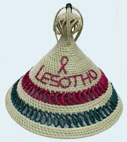

PINK SESHOESHOE
The peach dress is soft and pretty. It is made for women and shows kindness and beauty
DARK GREEN SESHOSHOE
The dark green dress has small, simple designs. It shows peace and respect for Basotho culture
BLACK,GOLD AND GREEN DRESS
This dress has bright green, black, and gold stripes. It shows pride and love for Basotho culture.
ORANGE DRESS
The orange dress is bright with fun patterns. Women wear it during happy celebrations.The orange dress is bright with fun patterns. Women wear it during happy celebrations.
BROWN SESHOESHOE
The brown dress has simple shapes and colors, It means a strong link to the land and family
SEANAMARENA
This blanket has a brown color with heart and spade symbols. It shows love, strength, and unity in Basotho tradition.
SEANAMARENA
A deep blue blanket with heart and spade patterns. It represents peace, loyalty, and strong cultural roots.
SEANAMARENA
These blankets are in black and white, decorated with the Basotho hat (Mokorotlo) and flowers. They show pride in tradition and beauty in nature.

SEANAMARENA
This peach-colored blanket has maize designs. It symbolizes harvest, blessings, and growth in the community.
SEANAMARENA
A soft red blanket with heart and spade symbols. It stands for love, warmth, and celebration.

THETHANA
The thethana is a skirt-like garment made of fiber, with individually braided strands attached to a waistband.Thethana is traditionally made from the fibers of the tsikitlane plant.

THETHANA
Worn from a young age, the thethana embodies innocence and symbolizes that a woman's body should be honored and not disrespected.
THETHANA
The brown dress has simple shapes and colors, It means a strong link to the land and family
THETHANA
The length of the thethana increases with the wearer's age and social development, serving as a visible marker of her advancement toward adulthood.

THETHANA
It is a significant and formal garment within Basotho culture, worn during important ceremonies and representing the transmission of traditions across generations.

MOSE OA KHOMO
Mose oa khomo is a Basotho dress made from cowhide, historically significant as traditional attire, particularly for women .

MOSE OA KHOMO
The dress holds cultural and symbolic meaning, representing a connection to traditional heritage and indigenous knowledge.

MOSE OA KHOMO
It historically served as a formal and customary dress for Basotho women.
TS'EHA
It ia an attire made of animal skin,and it is worn by men

KATIBA
Ts’ets’e is a flat, round hat with a wide brim and no pointed top like the mokorotlo. It’s often worn by Basotho women for sun protection during daily activities

KATIBA
Mokorotlo is most famous Basotho hat made from grass, shaped like a mountain. It represents Basotho identity. a conical-shaped straw hat inspired by the shape of the Qiloane Mountain.
KATIBA
Ts’ets’e is a flat, round hat with a wide brim and no pointed top like the mokorotlo. It’s often worn by Basotho women for sun protection during daily activities
KATIBA
Ts’ets’e is a flat, round hat with a wide brim and no pointed top like the mokorotlo. It’s often worn by Basotho women for sun protection during daily activities
LEQAPHA
Traditionally, it was made from animal skin, especially cowhide, currently leqapha is often made from modern materials like fiber, fabric, or synthetic leather, especially for convenience and affordability.

LEQAPHA
It is tied in a way that it leaves the buttocks slightly exposed , which is part of the cultural dress and not seen as inappropriate action .
LEQAPHA
Wearing leqapha marks a significant transition in a man’s life, representing respect, bravery, and identity.
SEAPARO SA NGALE
Seaparo sa lingoale is a special dress made for young Basotho women during initiation period, showing that they’ve reached a new stage in life.
SEAPARO SALINGOALE
Seaparo sa Lingoale is traditionally made from sheepskin. It is a cultural garment worn by Basotho girls during initiation period, and the use of sheepskin symbolizes purity, transformation, and connection to tradition.